SIGNITURE COCKTAILS
ABOUT
US
CONNECT
FAWUD!
We’re here to answer any of your questions about Wray & Nephew Overproof Rum.
HISTORY OF OVERPROOF
The term “proof” originated in the United Kingdom in the
17th century, when British sailors were given a ration of
rum as part of their payment. Proof refers to the dilution
point of a spirit that would sustain the ignition of
gunpowder. When sailors wanted “proof” that their rum
had not been watered down, gunpowder was doused with
the rum. If it ignited, the rum was overproof. Wray &
Nephew Overproof Rum has always been “guaranteed
full strength.”
17th century, when British sailors were given a ration of
rum as part of their payment. Proof refers to the dilution
point of a spirit that would sustain the ignition of
gunpowder. When sailors wanted “proof” that their rum
had not been watered down, gunpowder was doused with
the rum. If it ignited, the rum was overproof. Wray &
Nephew Overproof Rum has always been “guaranteed
full strength.”
PURE JAMAICAN SINCE 1970
No matter what you call it, there’s a bold attitude and
spirit that radiates from every Jamaican – from every
word, every gesture, every thread. For Jamaicans, being
true to who we are is everything. Since 1970, J. Wray &
Nephew Limited has worked passionately to produce
unique, high-quality rum that is as bold, original and as
vibrant as its people under the iconic ‘Wray & Nephew
Overproof Rum’ brand.
Wray & Nephew Overproof Rum is charismatic and
versatile, bold, complex and full of energy. Its honours
Jamaican spirit, which pulls people in and encourages
self-expression from the soul.
spirit that radiates from every Jamaican – from every
word, every gesture, every thread. For Jamaicans, being
true to who we are is everything. Since 1970, J. Wray &
Nephew Limited has worked passionately to produce
unique, high-quality rum that is as bold, original and as
vibrant as its people under the iconic ‘Wray & Nephew
Overproof Rum’ brand.
Wray & Nephew Overproof Rum is charismatic and
versatile, bold, complex and full of energy. Its honours
Jamaican spirit, which pulls people in and encourages
self-expression from the soul.
JAMAICAN CULTURES &
TRADITIONS
TRADITIONS
Although it’s the #1 selling rum in Jamaica, Wray &
Nephew Overproof Rum is more than just a drink; it’s
an integral part of the island’s culture. In Jamaica, locals
may also use Wray & Nephew Overproof Rum to:
1. Pour on the foundation of a new home to ward of
“duppies” or evil spirits
2. Make the traditional Holiday cake, a fruitcake in which
the fruits are soaked in rum.
Nephew Overproof Rum is more than just a drink; it’s
an integral part of the island’s culture. In Jamaica, locals
may also use Wray & Nephew Overproof Rum to:
1. Pour on the foundation of a new home to ward of
“duppies” or evil spirits
2. Make the traditional Holiday cake, a fruitcake in which
the fruits are soaked in rum.
WRAY & TING®
RUMPARI
PINEAPPLE MINT
PLANTER’S PUNCH
PLANTER’S PUNCH
1 OZ WRAY & NEPHEW OVERPROOF RUM
5 OZ TING® GRAPEFRUIT SODA
LIME
BUILD WRAY & NEPHEW OVERPROOF RUM
WITH TING® OVER CUBED ICE IN A COLLINS
GLASS. GARNISH WITH LIME.
5 OZ TING® GRAPEFRUIT SODA
LIME
BUILD WRAY & NEPHEW OVERPROOF RUM
WITH TING® OVER CUBED ICE IN A COLLINS
GLASS. GARNISH WITH LIME.
1 OZ WRAY & NEPHEW OVERPROOF RUM
1 OZ CAMPARI
SPLASH MIXER – TING® OR ORANGE JUICE
COMBINE ALL INGREDIENTS AND STIR.
POUR OVER CUBED ICE IN A ROCKS GLASS.
TOP WITH A SPLASH OF TING®
(OR ORANGE JUICE IF UNAVAILABLE) .
1 OZ CAMPARI
SPLASH MIXER – TING® OR ORANGE JUICE
COMBINE ALL INGREDIENTS AND STIR.
POUR OVER CUBED ICE IN A ROCKS GLASS.
TOP WITH A SPLASH OF TING®
(OR ORANGE JUICE IF UNAVAILABLE) .
WRAY RUM
PUNCH (4 SERVINGS)
PUNCH (4 SERVINGS)
1 OZ WRAY & NEPHEW OVERPROOF RUM
0.75 OZ LIME JUICE
0.75 OZ SIMPLE SYRUP
1 OZ PINEAPPLE JUICE
2 DASHES ANGOSTURA
MINT SPRIG/ GRATED NUTMEG GARNISH
ADD ALL INGREDIENTS TO A COCKTAIL
SHAKER, EXCEPT THE GARNISH. SHAKE
AND STRAIN INTO A COLLINS GLASS FILLED
WITH CRUSHED ICE. GARNISH WITH FRESH
MINT AND SHAVED NUTMEG.
0.75 OZ LIME JUICE
0.75 OZ SIMPLE SYRUP
1 OZ PINEAPPLE JUICE
2 DASHES ANGOSTURA
MINT SPRIG/ GRATED NUTMEG GARNISH
ADD ALL INGREDIENTS TO A COCKTAIL
SHAKER, EXCEPT THE GARNISH. SHAKE
AND STRAIN INTO A COLLINS GLASS FILLED
WITH CRUSHED ICE. GARNISH WITH FRESH
MINT AND SHAVED NUTMEG.
3 OZ WRAY & NEPHEW OVERPROOF RUM
5 OZ ORANGE JUICE
4 OZ PINEAPPLE JUICE
1 OZ APPLETON ESTATE SIGNATURE BLEND
1/2 OZ GRENADINE
1/4 OZ LIME JUICE
COMBINE ALL INGREDIENTS INTO A PUNCH BOWL
WITH ICE. FOR A GREATER EFFECT, ADD MIXED FRUIT
TO YOUR PUNCH BOWL. GARNISH WITH SLICES OF
ORANGE, PINEAPPLE, OR LIME AND SERVE.
GARNISH: FRUIT (ORANGE, PINEAPPLE, OR LIME)
5 OZ ORANGE JUICE
4 OZ PINEAPPLE JUICE
1 OZ APPLETON ESTATE SIGNATURE BLEND
1/2 OZ GRENADINE
1/4 OZ LIME JUICE
COMBINE ALL INGREDIENTS INTO A PUNCH BOWL
WITH ICE. FOR A GREATER EFFECT, ADD MIXED FRUIT
TO YOUR PUNCH BOWL. GARNISH WITH SLICES OF
ORANGE, PINEAPPLE, OR LIME AND SERVE.
GARNISH: FRUIT (ORANGE, PINEAPPLE, OR LIME)
Wray & Nephew Overproof Rum’s complex taste and aroma, combined with it’s robust
alcohol level, make it a very versatile rum. The fruit and molasses notes make it perfect
for mixing – from classic cocktails to more modern creations.
alcohol level, make it a very versatile rum. The fruit and molasses notes make it perfect
for mixing – from classic cocktails to more modern creations.
Top notes of citrus, pear and pineapple, married with bottom notes of honey and molasses
create our, intense multi-sensorial flavour.
create our, intense multi-sensorial flavour.
TASTING NOTES
© Wray & Nephew is a registered trademark of Campari Canada.
Terms & Conditions
Privacy Policy
SCROLL
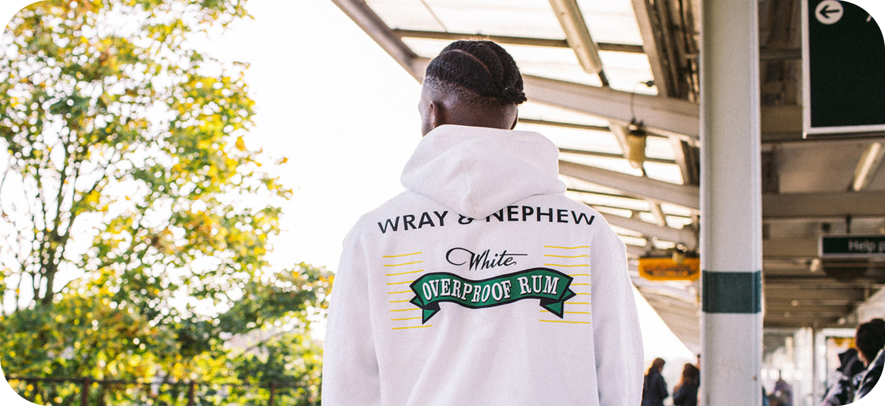
JAMAICA
 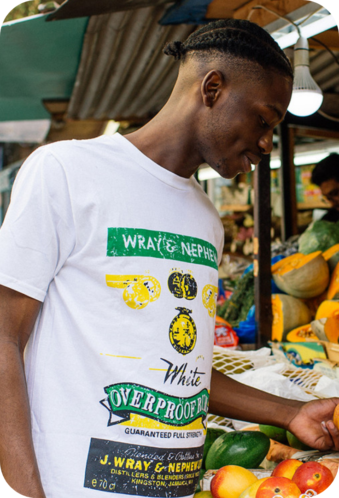
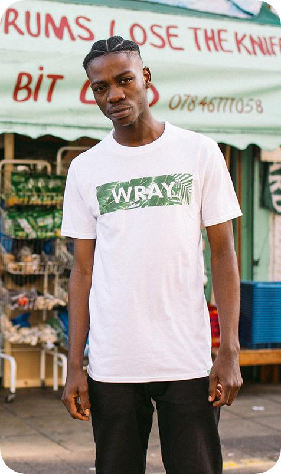
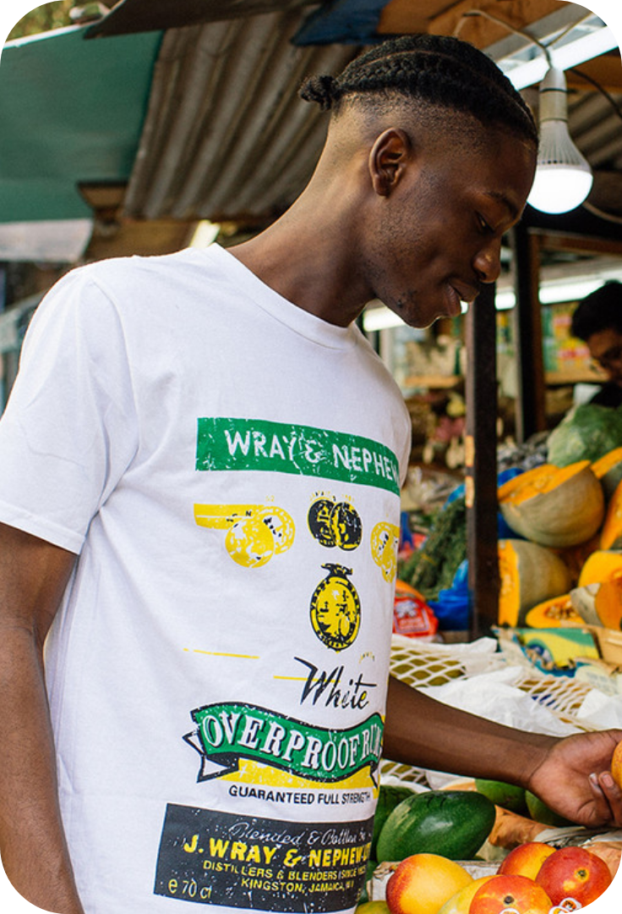
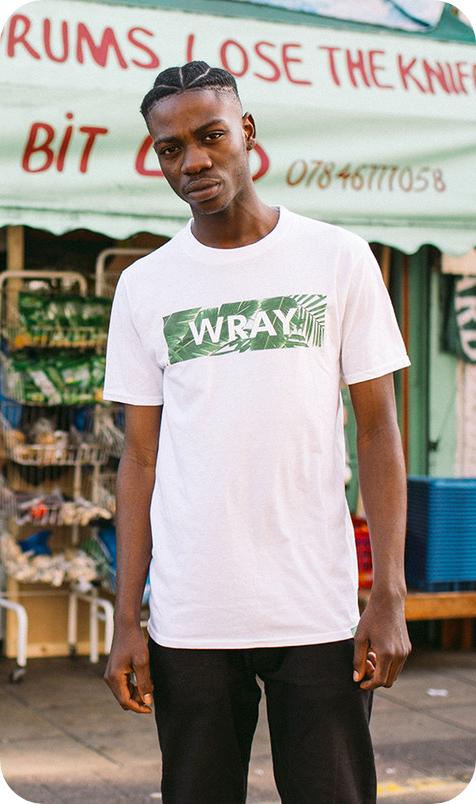
A TASTE OF
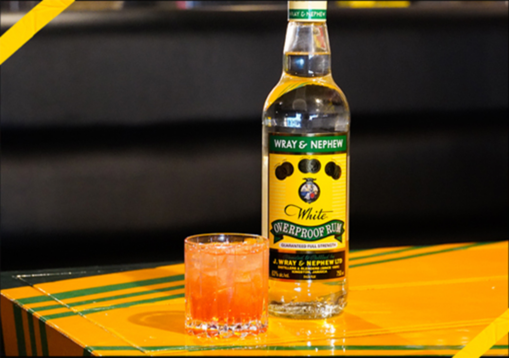
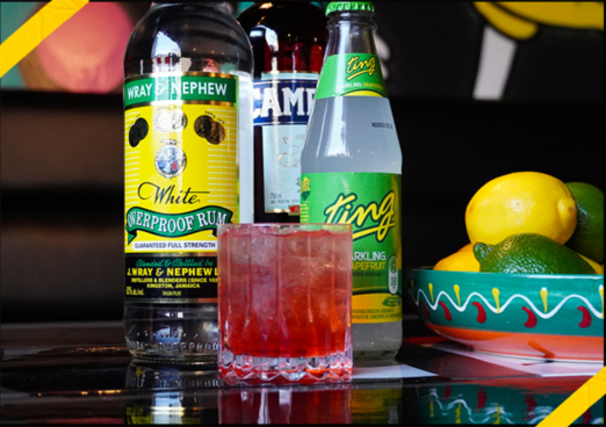
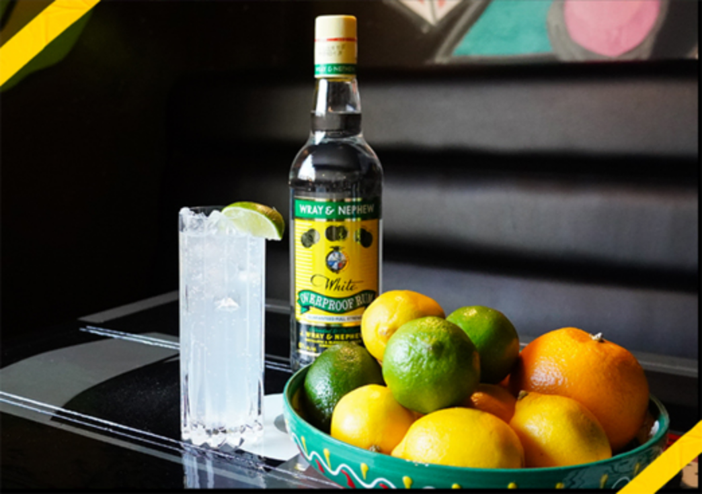
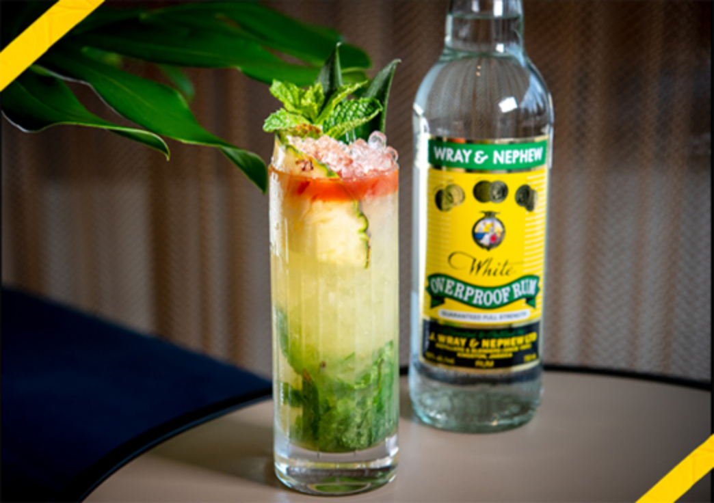
COCKTAIL
ABOUT US
CONNECT
 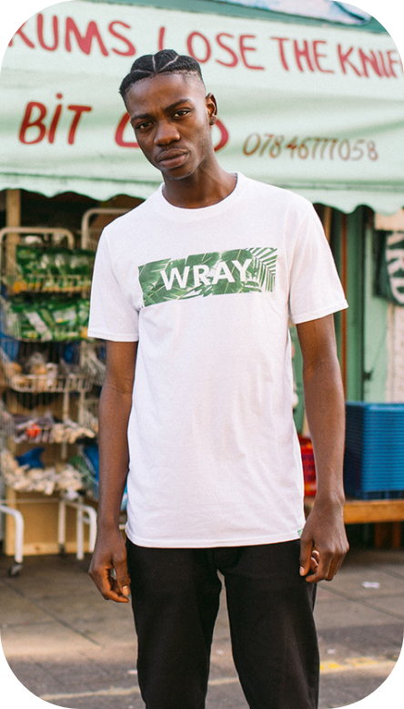
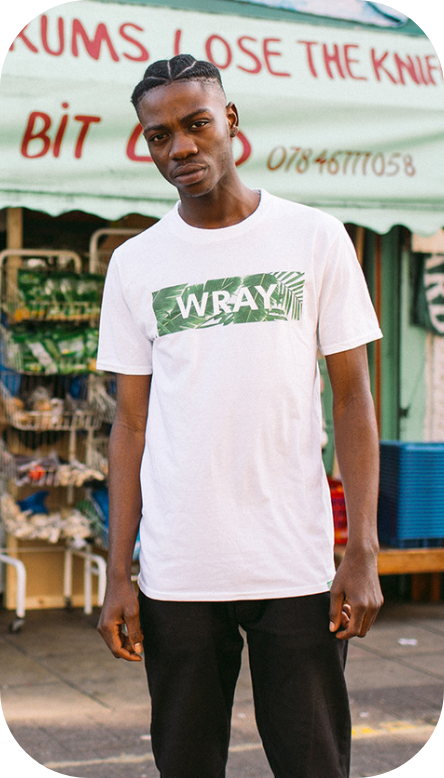